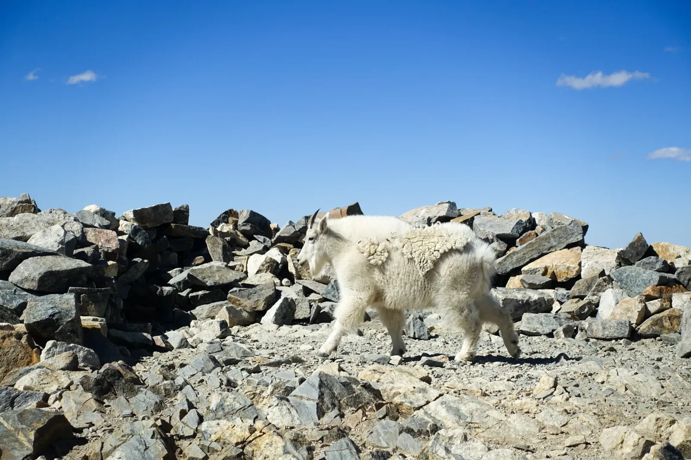

Locals Only
A dirt road lined with aspens in full color would have made the day on its own. I was a few days into a fall-color road trip through the Colorado high country, and yellow leaves blazed against dark evergreens while the Jeep's hood caught the whole show in its reflection. Above treeline, open tundra took over, all rust and mustard. And that was before the goats.
A few hours of climbing later, I topped out on a heap of broken rock with a stacked-stone windbreak, which is a hint to bring a jacket. The goats had beaten me there. They wandered the rubble in shaggy white coats, tufts of loose wool hanging off their backs, and not one of them seemed bothered that I'd shown up. You can't stay in a hurry around animals that aren't. A few of them strolled close enough to fill the frame. Give them room, though: they have horns, and on busy peaks they've figured out that hikers are walking salt licks. One pair looked like a parent and its kid, the youngster sticking close. Nobody had told them that getting up here is supposed to be the hard part!

From the top, a small turquoise lake sat far below in a cirque, the kind of bowl a glacier leaves behind. Snow still lingered at its edge. Farther out, a pale blue patch that I think was Lake Dillon lay below the jagged Gore Range, and a layer of cloud pooled in the far valleys. The goats, by the way, are transplants. The first mountain goats came to Colorado from Montana in 1947, and their descendants have been out-climbing the rest of us ever since. They looked right at home. I was only visiting. Back below the tundra, the aspens were exactly where I'd left them.